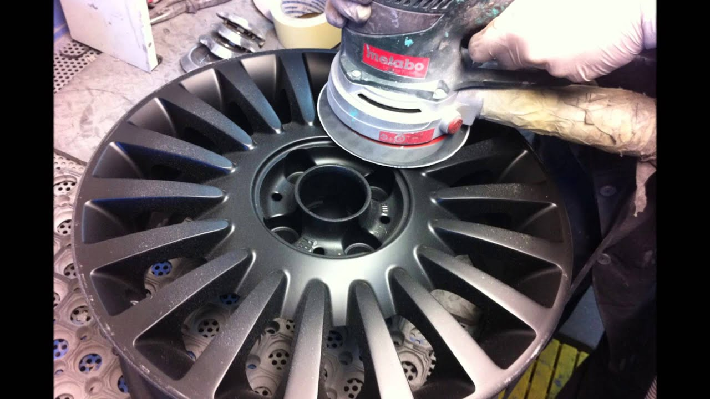

PORTONE CONDOMINIALE IN LEGNO Roma - Edilizia e riparazioni artigianali
 Menu Inserisci ? Il mio account Aiuto Pubblica il tuo annuncio gratis Pubblica un annuncio Home Artigianato - Riparazioni Lazio Artigianato - Riparazioni Roma e provincia Artigianato - Riparazioni RomaPORTONE CONDOMINIALE IN LEGNO
Inserito da Arte Del Legno 86 il 22/03/2021 1 /12 Località LazioRoma e provincia
Roma Tipo di annuncio Professionisti Offro Descrizione
Portone condominiale in legno di tutti i formati alti bassi larghi stretti monumentali falegnameria artigianale esegue chiama o vai sul ns sito x visionarli
ID annuncio 217239231 Utente Vivastreet dal 20/04/2010 Visitatori 0 Fate attenzione ai truffatori. Consultate i nostri consigli sucome evitare le truffe
Contatta l'inserzionista
Non dimenticare di citare Vivastreet quando contatti questo inserzionista!
Vedi il numero Tel Rispondi via emailQualcosa non va con questo annuncio?
Segnalateci il problema e lo esamineremo di conseguenza.
Segnalate questo annuncio.
Rispondi via email
Non hai trovato quello che cercavi?
Torna ai risultatiContatta l'inserzionista
Non dimenticare di citare Vivastreet quando contatti questo inserzionista!
Vedi il numero Tel Rispondi via emailSegnalate questo annuncio.
Annunci simili
Portoni condominiali in legno Roma Giardiniere per taglio prati e siepi e pulizia terreni Velletri NOLEGGIO PONTEGGI ELETTRICI Roma Eseguo lavori q Roma VENDITA - INSTALLAZIONE CONDIZIONATORI - CERTIFICAZIONI FGAS Pomezia Tutti i risultati Tags Artigianato - Riparazioni Lazio Artigianato - Riparazioni Roma e provincia Artigianato - Riparazioni Roma Fornisci la tua opinioneVivastreet
ContattaciAiuto
Come funziona Opzioni Visibilita' Condizioni generali di utilizzo del servizio Informativa sulla privacy Vivastreet CookiesLink utili
Pubblica il tuo annuncio gratis Copyright © 2021 Vivastreet - Part of DV International Ltd* Alcune categorie di Vivastreet rivolte ai soli professionisti sono a pagamento, allo scopo di facilitarne la pubblicazione e garantire la qualita' dei contenuti. Vivastreet e' pero' sempre gratis per i privati.